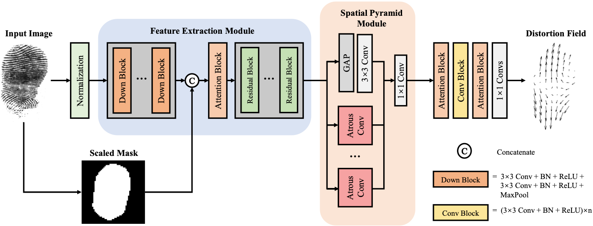
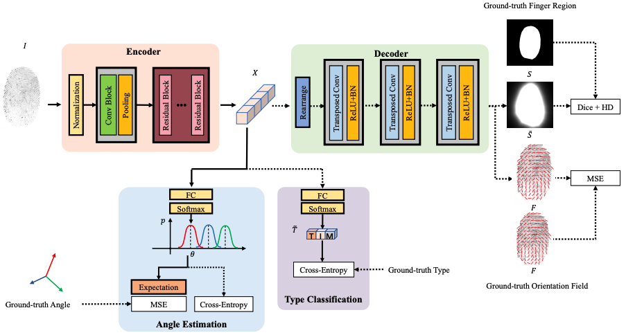
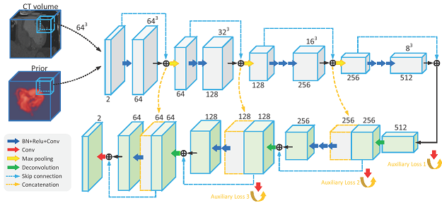

Yongjie Duan


Room 624, Main Building, THU
Beijing 100084, China
duanyj13@tsinghua.org.cn
About Me
I am currently a Ph.D. candidate in the Department of Automation,
Tsinghua University, advised by Prof. Jie Zhou and
Asst. Prof. Jiangjian Feng since 2017.
My Bachelor's degree is received from the Department of Automation at Tsinghua University.
My research interests lie in computer vision and machine learning, particularly medical image analysis,
fingerprint recognition, and human-computer interaction techniques.
Education

News
- Apr.2023 One paper accepted by TIFS 2023!
- Oct.2022 One paper accepted by IJCB 2022!
- Feb.2022 One paper accepted by IMWUT 2022!
- Dec.2021 One paper accepted by IUI 2022! Best Paper Awards Honorable Mention
- Jun.2021 One paper accepted by IJCB 2021 as Oral!
- Jun.2019 One paper accepted by STACOM 2019 as Poster!
- Jun.2018 One paper accepted by STACOM 2018 as Poster!
- Oct.2016 Joined Asst. Prof. Jianjiang Feng's group and become a member of the Intelligent Vision Group.
Publications [Full List]

|
Estimating Fingerprint Pose via Dense Voting
TIFS 2023
|
|  |
Direct Regression of Distortion Field from a Single Fingerprint Image
IJCB 2022
|
{kind=link}
|  |
Estimating 3D Finger Angle via Fingerprint Image
IMWUT 2022
|
{kind=link}

|
Estimating 3D Finger Pose via 2D-3D Fingerprint Matching
IUI 2022
|

|
Orientation Field Estimation for Latent Fingerprints with Prior Knowledge of Fingerprint Pattern
IJCB 2021
|

|
A Cascade Regression Model for Anatomical Landmark Detection
STACOM 2019
|
|  |
Context Aware 3D Fully Convolutional Networks for Coronary Artery Segmentation
STACOM 2018
|
{kind=link}
Teaching
-
Infomation Theory
Teaching Assistent (TA) with Asst. Prof. Jianjiang Feng, THU • 2019
-
Digital Image Processing
Teaching Assistent (TA) with Asst. Prof. Jianjiang Feng, THU • 2018
Professional Service
- Reviewer: JCCT 2019, CVPR 2020/2021/2022, CCBR 2021, ACPR 2021
Awards and Honors
- IHI Scholarship, Tsinghua University • 2018
- Outstanding Graduate, Tsinghua University • 2017
- Academic Excellence Award, Tsinghua University • 2016
- Honorable Mention, Mathematical Contest in Modeling • 2016